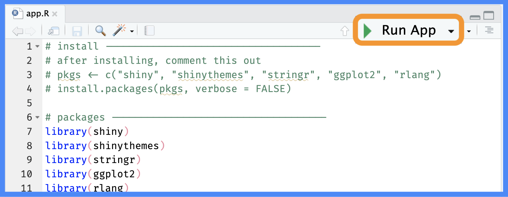

This section is currently under development. Thank you for your patience.
In the previous chapter we removed the calls to library() in app.R, which is a critical step in managing the dependencies. This chapter will cover the differences between shiny’s shinyApp() and runApp() functions, which one belongs in the app.R file, and other options for running an app (or apps) in your app-package.
app.R (main)
We’re going to revert back to the main branch of pkgApp to get a better understanding of the evolution of our app.R file. When we initially used app.R to run movies_app(), it contained the library() calls for the necessary packages, the code for movies_app(), and a call to the function:
movies_app() is a wrapper function for shiny::shinyApp(), but it creates the ui and server arguments internally (with the modules). As we can see in the image below, the Run App icon is available in the Source pane:

(a) app.R in main branch
Figure 1: Run App icon in app.R of main branch
Clicking on Run App will call shiny::runApp() in the Console, but it also produces a warning:
Figure 2: Clicking on Run App in app.R of main branch
So even though app.R contains a call to shinyApp(), movies_app() is actually run with runApp() (we’ll come back to this in a moment).
loadSupport warning
The warning in the Console tells us we should be mindful of ‘unexpected behavior(s)’ when sourcing the R/ subdirectory in an R package (or app-package in this case):
Warning in loadSupport(appDir, renv = sharedEnv, globalrenv = NULL) : Loading R/ subdirectory for Shiny application, but this directory appears to contain an R package. Sourcing files in R/ may cause unexpected behavior.
The warning above also tells us that despite pkgApp being structured as an app-package, the R/ folding is still being sourced like it’s a shiny project.
app.R (02_roxygen2)
Let’s fast-forward to the 02_roxygen2 branch of pkgApp. This is the first version of movies_app() that’s contained in the R/ folder (in R/movies_app.R).
Figure 3: The application is launched (with the loadSupport() warning)
Feature or bug?
The example above demonstrates 1) the differences between shinyApp() and runApp(), and 2) the tensions between the R package structure and the shiny framework.
The reason we’re able to call runApp() in the Console and launch the application in movies_app() is because runApp() is designed to work with directories containing shiny apps (not ui and server arguments).
We’re seeing the loadSupport() warning because one of the features of shiny projects is to source() the files in the R/ folder (which we covered in Chapter 1). However, after converting the contents of pkgApp into an app-package (like the versions in the main and 02_roxygen2 branches), the contents of R/ are loaded with devtools::load_all().
In the following section, we’ll compare shinyApp() and runApp() to determine which one to use in R/movies_app.R and the app.R file.
shinyApp() vs. runApp()
shinyApp() is typically used to create apps within an interactive R session (like the R console or in Posit Workbench). Developers can use shinyApp() to quickly spin up simple applications by defining ui and server arguments (e.g. as shinyApp(ui, server)), which is why its included as the boilerplate app with new shiny project.
shinyApp( ui =fluidPage(# UI elements), server =function(input, output){# Server logic})
runApp() is designed to run standalone apps located in a separate directory containing ui.R and server.R (or app.R) files. This feature is beneficial for app-packages, because apps can be organized inside a dedicated sub-directory and provided to the appDir argument.
We want to have control over where the shiny application will be launched from (i.e., the Viewer pane, the IDE Window, or an external browser). We can access this with the shiny.launch.browser option:
Another great feature of runApp() is the ability to control the application’s behavior with test.mode:
‘Should the application be launched in test mode? This is only used for recording or running automated tests. Defaults to the shiny.testmode option, or FALSE if the option is not set.’
The test.mode argument lets us export values from our application when we’re running tests (which we’ll cover in-depth in the testing chapter).
We’ll make test an logical argument (defaulting to TRUE) in our updated movies_app() function.
Remember–we don’t need to explicitly namespace shinyApp() or runApp() (i.e., with pkg::fun()) because we’re using #' @import shiny in the R/movies_app.R file.
Updated app.R
Now that we’ve updated the movies_app() function, we should re-write the contents of app.R to account for the app-package structure.
Written this way, in a non-interactive R session, app.R will re-direct the error output and attempt to load and attach pkgApp, and if this fails, app.R will attempt to load all the files in the R/ folder.
pkgload::load_all()
If the session is interactive (i.e., !interactive() == FALSE), we want app.R to load all the code in the R/ folder with pkgload::load_all().
Figure 6: pkgApp is loaded before running movies_app()
Recap
This chapter has covered some options for what to include in the app.R file of your app-package. The differences between shinyApp() and runApp() are worth exploring further, especially if you plan on having more than one apps in a package (or multiple versions of the same application in the same app-package).
shinyApp() doesn’t care about file structure, so it’s useful for quick prototyping or if the app is in a single .R script. It’s also more portable because you can share your app with a single .R script.
It’s possible to bundle shinyApp() in a wrapper function to integrate within an R package (like we’ve done with movies_app()).
shinyApp() can also be used to return a shiny app object, which can be useful if you want to explore the app structure programmatically (i.e., testing).
runApp() is designed for running apps contained in a directory (i.e., runApp('path/to/app'). If the app is in separate ui.R and server.R files (or a single app.R file) runApp() will automatically look for these. However, a shiny app object can also be passed to the appDir argument to launch your app.
If you’ve separated your app into multiple files that includes additional assets like data or a www/ folder, runApp() is a better option.
In the following chapter, we’re going to cover how to ensure movies.Data becomes part of the pkgApp namespace.